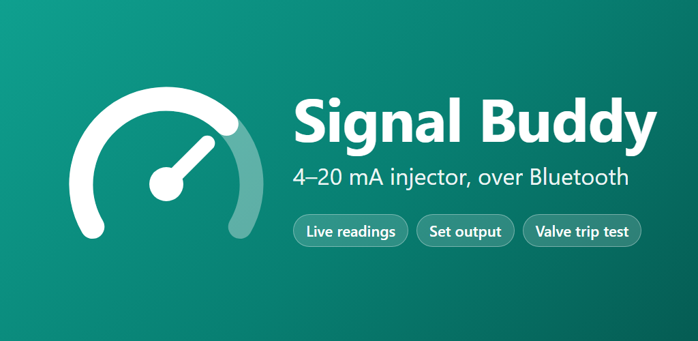

Control and test a 4–20 mA loop from your phone
Signal Buddy is the Android companion app for the 4–20 mA injector: a small Bluetooth unit that drives a 4–20 mA signal, reads one back, and switches a 24 V solenoid.

Hardware needed. Signal Buddy works only with the 4–20 mA injector. It doesn't work on its own or with other Bluetooth devices.
What it does
Live readings
- Measures 4-20mA current to 0.001 mA
- % of span, and output vs measured
- Warnings outside 4–20 mA
Sets 4-20mA output
- Any value from 3.600 to 20.400 mA, including under and over range
- 0.1 mA steps, a slider, or presets
- Confirmed by the injector
Valve trip test
- Trips the solenoid output and records the valve 2000 times a second
- Start, damping and closed times
- Pass or fail against 600 ms, with the closing curve
Logging
- Readings to CSV every 0.5–10 s
- Valve recordings saved as CSV
- Share or save from the app
Use it on a computer
Signal Buddy Web does the same job in Google Chrome or Microsoft Edge on a computer with Bluetooth (Windows, macOS, Linux or ChromeOS). There's nothing to download: open it, then install it from the browser if you like. After the first visit it also works offline.
The injector takes one connection at a time, so disconnect the phone app
first. On Linux, Chrome needs chrome://flags/#enable-experimental-web-platform-features
enabled. Firefox and Safari don't support Web Bluetooth.
Privacy
Signal Buddy collects no personal data. It has no account, no ads, no analytics and no internet access. Read the full privacy policy.